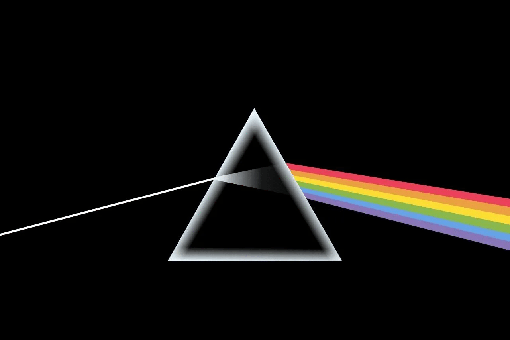

60 秒动画速览：弗朗西斯·哈尔岑与冰立方中微子天文台，从三位宇宙信使到冰下 5160 个光学传感器。
你的浏览器不支持 HTML5 视频播放。
本视频 60 秒讲清 2026 年诺贝尔物理学奖：为什么授予冰立方缔造者弗朗西斯·哈尔岑。内容分六幕展开：①获奖人与获奖理由——发现天体物理起源的高能中微子；②1988 年「一立方千米南极冰」的大胆设想；③宇宙深处的三位信使——宇宙线、伽马光子与中微子，为何只有中微子能径直带来源头方向；④冰立方的构造——冰下 1450～2450 米布设 5160 个光学传感器，中微子撞击原子核泛起蓝色切伦科夫光；⑤两大里程碑——2013 年首个太阳系外高能中微子、2023 年首次锁定天体来源；⑥幽灵粒子正在打开观测极端宇宙的全新窗口。全程 1920×1080 高清动画 + 英文播报中文字幕，适合课堂前沿引入或科普自学。